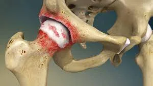
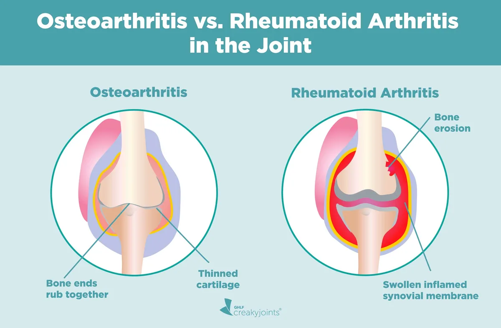
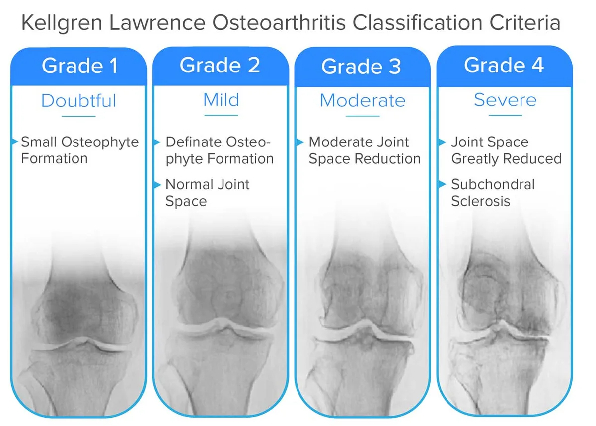
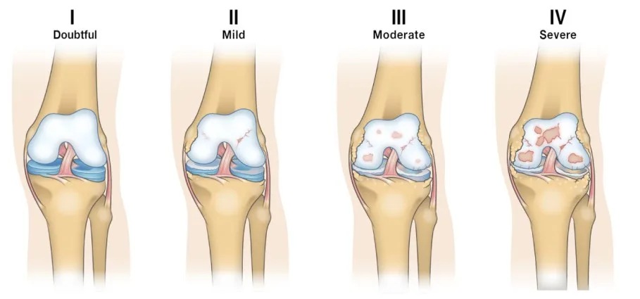
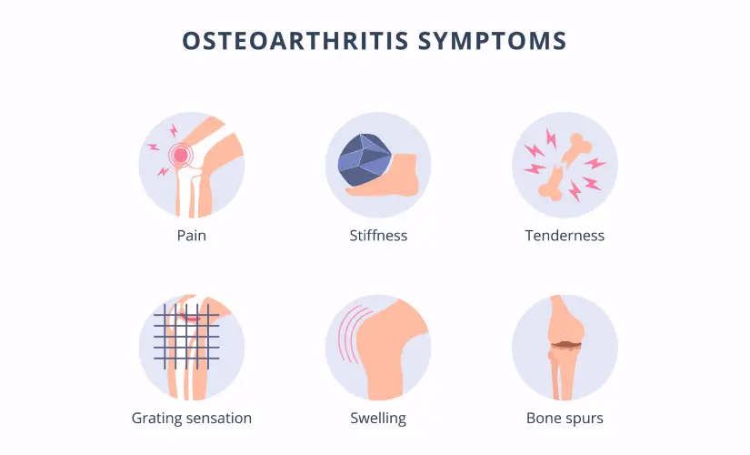
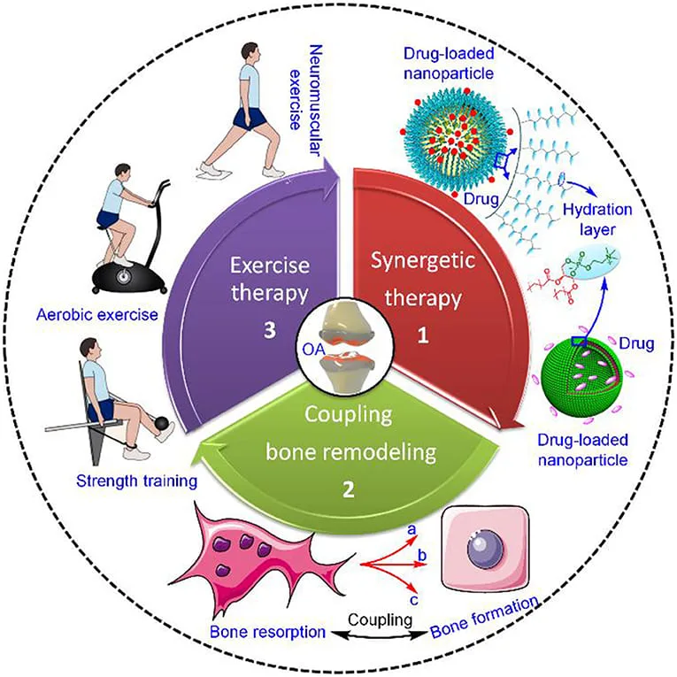

Expanded Nursing Uganda Explanation
Osteoarthritis should be understood beyond a short definition. Link the concept to patient history, focused assessment, common risks, nursing priorities, documentation and evaluation of outcomes.
01 Overview
Osteoarthritis (OA) is a common, chronic, and progressive degenerative joint disease characterized by the breakdown and eventual loss of articular cartilage, which normally cushions the ends of bones.
Osteoarthritis is a type of arthritis that occurs when flexible tissue at the ends of bones wears down.
This cartilage degradation leads to bones rubbing directly against each other, causing pain, stiffness, and loss of movement. OA primarily affects the synovial joints and is often described as a "wear-and-tear" type of arthritis, though it's now understood to be a more complex process involving the entire joint, including the subchondral bone, synovium, and surrounding soft tissues.
- Degenerative: Involves the gradual deterioration of joint components.
- Non-inflammatory (primarily): While low-grade inflammation can occur in the synovium, it is not the primary driver of the disease, unlike RA.
- Progressive: Worsens over time, though the rate of progression varies.
- Mechanical Stress: Often associated with mechanical stress, joint injury, and aging.
It's crucial to understand the fundamental differences between OA and RA. While both cause joint pain and stiffness, their underlying pathology, clinical presentation, and management are distinct.
- Feature Osteoarthritis (OA) Rheumatoid Arthritis (RA)
- Type of Disease Degenerative joint disease ("wear-and-tear" type) Autoimmune, chronic inflammatory disease
- Primary Pathology Cartilage breakdown and loss; bone-on-bone friction Synovial inflammation (synovitis) leading to pannus formation and joint destruction
- Etiology Multifactorial: age, genetics, obesity, joint injury, mechanical stress Autoimmune response (genetic predisposition, environmental triggers)
- Nature of Inflammation Primarily non-inflammatory; localized, low-grade inflammation may occur in later stages Significant, systemic, and persistent inflammation
- Onset Gradual, insidious, often developing over years Often gradual, but can be acute/subacute; typically weeks to months
- Joints Affected (Pattern) Asymmetrical involvement; affects weight-bearing joints (knees, hips, spine), hands (DIP, PIP, CMC of thumb), feet (MTP). Symmetrical involvement; affects small joints of hands (MCP, PIP), wrists, feet (MTP), shoulders, elbows, knees. Seldom affects DIP joints.
- Morning Stiffness Brief, typically < 30 minutes; improves with movement Prolonged, typically > 30 minutes (often hours); worse after rest
- Pain Pattern Worse with activity and weight-bearing; relieved by rest; "end-of-day" pain Worse at rest and in the morning; improves with activity
- Systemic Symptoms Absent (no fever, fatigue, malaise, weight loss) Present (fatigue, malaise, low-grade fever, weight loss)
- Joint Swelling Hard, bony enlargement (osteophytes); sometimes effusions Soft, boggy, warm, tender, symmetrical swelling
- Joint Deformities Bony enlargements (Heberden's/Bouchard's nodes in fingers); alignment issues (e.g., bow-legs) Swan-neck, boutonnière, ulnar deviation, rheumatoid nodules
- Laboratory Findings Usually normal ESR/CRP; negative RF/anti-CCP Elevated ESR/CRP; often positive RF/anti-CCP
- Radiographic Findings Joint space narrowing, osteophytes, subchondral sclerosis, cysts Joint space narrowing, erosions, juxta-articular osteopenia
- Treatment Focus Pain management, functional improvement, preserving joint structure, lifestyle modifications Suppressing inflammation, preventing joint destruction (DMARDs), managing symptoms
OA can be broadly classified into two categories based on its etiology:
- Primary (Idiopathic) OA: The most common form, with no identifiable underlying cause other than general risk factors (e.g., aging, genetics). It typically involves multiple joints.
- Secondary OA: Occurs as a result of a known predisposing factor that directly damages cartilage or alters joint mechanics (e.g., trauma, inflammatory joint disease, metabolic disorders).
Regardless of classification, a variety of risk factors contribute to its development and progression:
- Obesity / Overweight: Mechanism: Increased mechanical stress on weight-bearing joints (knees, hips, spine). Adipose tissue also produces pro-inflammatory cytokines (adipokines) that contribute to systemic inflammation and cartilage degradation, suggesting a metabolic link beyond just mechanical stress.
- Impact: A strong, dose-dependent relationship exists. Even a modest weight loss can significantly reduce the risk and slow the progression of OA, especially in the knees.
- Joint Injury or Trauma: Mechanism: Acute injuries (e.g., meniscal tears, ligamentous injuries like ACL rupture, fractures involving joint surfaces) can directly damage cartilage or alter joint mechanics, leading to abnormal stress distribution and accelerated wear. This is often termed "post-traumatic OA."
- Impact: Can lead to early-onset OA, even decades after the initial injury.
- Occupational / Repetitive Joint Stress: Mechanism: Certain occupations or activities involving repetitive loading, kneeling, heavy lifting, or prolonged standing can increase mechanical stress on specific joints, accelerating cartilage breakdown.
- Examples: Construction workers, athletes (e.g., soccer, football, ballet dancers), and certain factory workers.
- Muscle Weakness (especially quadriceps): Mechanism: Weakness of muscles surrounding a joint (e.g., quadriceps weakness around the knee) can compromise joint stability and shock absorption, leading to increased stress on cartilage.
- Poor Posture and Biomechanics: Mechanism: Incorrect alignment or movement patterns can lead to uneven loading and stress distribution across joint surfaces.
- Nutritional Factors (Indirectly Modifiable): Mechanism: While not a direct cause, poor nutrition can affect overall joint health and inflammatory status.
- Impact: Maintaining a balanced diet supports general health, and managing weight through diet is crucial.
- Age: Mechanism: The strongest risk factor. Cartilage naturally degenerates with age, becoming less elastic, more susceptible to damage, and less able to repair itself. Chondrocyte function declines.
- Impact: OA prevalence significantly increases with age, especially after 40-50 years.
- Genetics / Heredity: Mechanism: Genetic predisposition plays a significant role, particularly in generalized OA (affecting multiple joints) and OA of specific joints (e.g., hand OA, hip OA). Genes can influence cartilage quality, bone structure, and inflammatory responses.
- Impact: If parents or close relatives have OA, an individual's risk is higher.
- Sex (Gender): Mechanism: OA is generally more common and often more severe in women, especially after menopause. Hormonal factors (e.g., estrogen deficiency) are thought to play a role, as is differing joint anatomy and biomechanics.
- Impact: Women have a higher incidence of knee and hand OA, while hip OA is more evenly distributed or slightly more common in men.
- Race / Ethnicity: Mechanism: Some racial/ethnic groups have different prevalence rates or patterns of OA, potentially due to genetic factors, body habitus, lifestyle, or environmental exposures.
- Impact: e.g., African Americans have a higher prevalence of knee OA but a lower prevalence of hip OA compared to Caucasians.
- Bone Density: Mechanism: Paradoxically, higher bone mineral density (BMD) has been associated with an increased risk of OA. This might be because stiffer bones are less able to absorb shock, transferring more stress to the cartilage.
- Congenital or Developmental Joint Abnormalities: Mechanism: Conditions present from birth or developing early in life that affect joint structure (e.g., hip dysplasia, Legg-Calvé-Perthes disease, congenital dislocation of the hip) can lead to abnormal joint mechanics and premature cartilage wear.
- Metabolic Disorders (Indirectly Modifiable in some cases): Mechanism: Certain conditions like diabetes, hemochromatosis (iron overload), and Wilson's disease (copper overload) can affect cartilage metabolism and increase OA risk. Crystal deposition diseases (e.g., gout, pseudogout) can also cause secondary OA.
This system grades the severity of OA based on X-ray findings, ranging from 0 (no OA,) to 4 (severe OA).
There's a minimal presence of osteophytes (bone spurs) at the joint margins, but the joint space itself still appears normal or near normal. This grade might be difficult to definitively diagnose as OA.
- Key Radiographic Feature: Small Osteophyte Formation
Clear and distinct osteophytes are visible. However, despite the presence of bone spurs, the joint space between the bones is still largely preserved, indicating only early cartilage loss.
- Key Radiographic Features: Definite Osteophyte Formation
- Normal Joint Space
The joint space has clearly narrowed, indicating significant cartilage loss. Osteophytes are generally prominent.
- Key Radiographic Features: Moderate Joint Space Reduction
- Possibly also moderate osteophytes, some subchondral sclerosis, and cysts (though not explicitly listed as criteria in the image for this grade).
There is almost complete obliteration of the joint space, signifying extensive cartilage loss. The bone beneath the cartilage (subchondral bone) shows increased density (sclerosis) due to increased stress. Large osteophytes and sometimes noticeable bone deformity are present. This represents end-stage OA.
- Key Radiographic Features: Joint Space Greatly Reduced
- Subchondral Sclerosis
- Large Osteophytes
- Possible Subchondral Cysts and Bone Deformity
The pathophysiology of Osteoarthritis (OA) is a process involving the entire joint structure, not just passive "wear and tear" of cartilage.
Before understanding OA, it's helpful to recall the structure of healthy cartilage:
- Composition: Primarily composed of chondrocytes (cartilage cells) embedded in an extracellular matrix (ECM).
- ECM Components: Collagen fibers (Type II): Provide tensile strength.
- Proteoglycans (e.g., Aggrecan): Large molecules that trap water, giving cartilage its resilience and ability to withstand compressive forces.
- Water: Accounts for 65-80% of cartilage weight, crucial for shock absorption.
- Avascular and Aneural: Lacks blood vessels and nerves, making repair capacity limited and preventing pain sensation within the cartilage itself.
- Function: Provides a smooth, low-friction surface for joint movement and distributes load efficiently across the joint.
The development of OA is a cycle involving initial damage, repair attempts, and eventual failure of repair mechanisms, leading to progressive degeneration.
- Initial Triggers/Stressors: Mechanical stress (obesity, trauma, repetitive use, malalignment).
- Biochemical changes (aging, genetics, inflammatory mediators).
- These stressors disrupt the normal homeostasis of the chondrocytes and their surrounding ECM.
- Chondrocyte Activation and Dysregulation: Initially, chondrocytes respond to stress by attempting repair: They proliferate.
- They increase synthesis of matrix components (collagen, proteoglycans).
- However, this repair is often abnormal or insufficient, producing an inferior quality matrix.
- Over time, and with persistent stress, chondrocytes become dysfunctional: They switch from an anabolic (building) to a catabolic (breaking down) state.
- They produce pro-inflammatory mediators and degradative enzymes.
- Ultimately, they undergo apoptosis (programmed cell death), leading to a reduction in chondrocyte numbers.
- Extracellular Matrix (ECM) Degradation: Enzyme Production: Dysfunctional chondrocytes and synovial cells produce excessive amounts of proteolytic enzymes: Matrix Metalloproteinases (MMPs): A family of enzymes (e.g., collagenases, stromelysins) that break down collagen and proteoglycans.
- Aggrecanases (ADAMTS enzymes): Specifically degrade aggrecan.
- Proteoglycan Loss: The earliest biochemical change in OA is the breakdown and loss of aggrecan. This reduces the cartilage's water-binding capacity, making it less resilient and more susceptible to mechanical damage.
- Collagen Network Damage: As the disease progresses, the collagen (Type II) network is also degraded, leading to further structural weakening and eventual fissuring and erosion of the cartilage.
- Cartilage Changes: Softening and Fibrillation: The cartilage surface becomes rough, soft, and frayed, developing cracks and fissures (fibrillation).
- Thinning and Erosion: These fissures deepen, and the cartilage gradually thins, eventually eroding completely in areas, exposing the underlying subchondral bone.
- Subchondral Bone Involvement: Increased Stress: Once the protective cartilage layer is compromised, the subchondral bone bears increased mechanical stress.
- Bone Sclerosis: The bone beneath the damaged cartilage responds by becoming denser and thicker (subchondral sclerosis).
- Cyst Formation: Small fluid-filled cavities (subchondral cysts) can form within the bone.
- Osteophyte Formation: At the joint margins, the body attempts to increase the surface area and stabilize the joint by forming new bone outgrowths called osteophytes (bone spurs). These contribute to joint stiffness and can impinge on surrounding tissues.
- Synovial Inflammation (Secondary Synovitis): Detritus Release: Cartilage and bone fragments (detritus) released into the synovial fluid act as irritants.
- Inflammatory Response: These irritants trigger a low-grade inflammatory response in the synovial membrane, causing the synovium to become inflamed (synovitis).
- Mediator Release: The inflamed synovium releases pro-inflammatory cytokines (e.g., IL-1, TNF-alpha) and more degradative enzymes, further contributing to cartilage breakdown and pain. This secondary inflammation, while typically less severe than in RA, contributes to pain and effusions.
- Ligament and Meniscus Changes: Ligaments can become stretched and lax (leading to instability) or fibrotic and stiff.
- Menisci (in the knee) can degenerate, tear, and lose their shock-absorbing capacity.
- Pain: Primarily arises from the inflamed synovium, stretching of the joint capsule, subchondral bone (which is innervated), muscle spasms, and pressure from osteophytes.
- Stiffness: Due to synovial inflammation, joint effusion, muscle guarding, and osteophyte formation.
- Loss of Function: Resulting from pain, stiffness, muscle weakness, and joint instability/deformity.
- Crepitus: The grinding sensation or sound caused by rough cartilage surfaces rubbing against each other.
- Deformity: Due to loss of cartilage, subchondral bone changes, and osteophyte formation, leading to altered joint alignment.
The clinical manifestations of Osteoarthritis (OA) are a direct result of the pathological changes within the joint, primarily cartilage degradation, subchondral bone remodeling, and secondary synovitis. The disease has a slow, insidious onset and a progressive course, gradually worsening over years.
- Joint Pain: Most prominent symptom.
- Characteristics: Deep, aching pain, often described as "gnawing" or "sore."
- Mechanical pattern: Typically worsens with activity, weight-bearing, and prolonged use.
- Relieved by rest in the early stages.
- May become more constant and present at rest or even at night as the disease progresses, especially due to secondary inflammation or subchondral bone pain.
- Aggravated by cold, damp weather in some individuals.
- Joint Stiffness: "Gelling phenomenon": Stiffness occurs after periods of inactivity or rest.
- Morning Stiffness: Classic presentation, but typically brief, lasting less than 30 minutes (a key differentiator from RA). It improves with movement.
- Stiffness can also occur after sitting for prolonged periods ("post-rest stiffness").
- Crepitus (Cracking, Grating, or Grinding Sensation): Often felt and sometimes heard during joint movement.
- Caused by the roughened articular surfaces of cartilage and bone rubbing against each other.
- Functional Limitation and Decreased Range of Motion (ROM): Due to pain, stiffness, joint effusions, and osteophyte formation.
- Can significantly impact activities of daily living (ADLs) and quality of life.
- Patients may avoid using the affected joint due to pain, leading to muscle weakness and atrophy around the joint.
- Joint Swelling / Effusion: May occur intermittently, especially after activity, due to inflammation of the synovial membrane (secondary synovitis) or accumulation of joint fluid.
- Often feels "hard" if due to bony enlargement, or "boggy" if due to synovial thickening/fluid.
- Typically less pronounced, less warm, and less symmetrical than in RA.
- Tenderness: Localized tenderness over the joint line or surrounding structures.
- Joint Deformity and Enlargement: Bony enlargement: Due to osteophyte formation and subchondral bone thickening.
- Heberden's Nodes: Bony enlargements at the distal interphalangeal (DIP) joints of the fingers, particularly common in women, often genetic.
- Bouchard's Nodes: Bony enlargements at the proximal interphalangeal (PIP) joints of the fingers, less common than Heberden's nodes.
- Malalignment: Asymmetry and altered joint axis (e.g., genu varum/bow-legged in knee OA, valgus/knock-kneed in some cases).
- Muscle Weakness and Atrophy: Result from disuse due to pain and guarding, further contributing to joint instability.
OA typically affects certain joints more frequently and often in an asymmetrical pattern:
- Weight-Bearing Joints: Knees: Very common, leading to difficulty walking, climbing stairs, and standing.
- Hips: Can cause pain in the groin, buttock, or thigh; difficulty with ambulation, bending, and putting on shoes/socks.
- Spine: Cervical and lumbar spine (especially facet joints), leading to back pain, stiffness, and sometimes nerve compression (radiculopathy).
- Small Joints of the Hands: Distal Interphalangeal (DIP) joints: Leading to Heberden's nodes.
- Proximal Interphalangeal (PIP) joints: Leading to Bouchard's nodes.
- First Carpometacarpal (CMC) joint of the thumb: Causes pain at the base of the thumb, difficulty with grasping, pinching, and fine motor tasks.
- Feet: First Metatarsophalangeal (MTP) joint: (big toe), leading to bunions and pain with walking.
- Midfoot.
- Less Commonly Affected: Wrists, elbows, shoulders, ankles (unless due to prior injury). These are more characteristic of inflammatory arthropathies or post-traumatic OA.
- Slow and Gradual: OA is typically a slowly progressive disease, with symptoms gradually worsening over many years.
- Intermittent Flare-ups: Patients may experience periods of increased pain and stiffness (flare-ups) often triggered by overuse, injury, or changes in weather.
- Variability: The rate of progression varies widely among individuals and even between different joints in the same person. Some may have mild symptoms for decades, while others experience rapid progression to severe joint damage and disability.
- Impact on Quality of Life: As the disease advances, pain becomes more constant, functional limitations increase, and quality of life can be significantly impacted, affecting work, leisure, and daily activities.
Diagnosing Osteoarthritis (OA) primarily relies on a combination of a thorough patient history, physical examination, and characteristic radiological findings. Unlike Rheumatoid Arthritis, there are no specific blood tests that definitively diagnose OA. Laboratory tests are more often used to rule out other forms of arthritis.
- Symptom Onset and Duration: Gradual onset, typically over months to years.
- Pain Characteristics: Location, Quality (aching, deep), Aggravating factors, Alleviating factors (rest), Timing (worse at end of day).
- Stiffness: Morning stiffness (brief, < 30 minutes), Stiffness after rest ("gelling phenomenon").
- Functional Limitations: Impact on daily activities (walking, climbing stairs, dressing, grasping).
- Past Medical History: Previous joint injuries, surgeries, other medical conditions (e.g., diabetes, gout).
- Family History: History of OA in close relatives.
- Risk Factors: Obesity, occupational activities, sports.
- Absence of Systemic Symptoms: Crucial for differentiating from inflammatory arthropathies (no fever, malaise, significant weight loss).
- Inspection: Joint enlargement: Bony (osteophytes, Heberden's/Bouchard's nodes) rather than soft tissue swelling.
- Deformity/Malalignment: Varus (bow-legged) or valgus (knock-kneed) deformities in knees, ulnar deviation in hands (less common than RA).
- Muscle atrophy: Especially quadriceps in knee OA.
- Palpation: Tenderness: Localized over joint line or surrounding structures.
- Warmth: May be present with effusions but usually less pronounced than in inflammatory arthritis.
- Effusion: Detectable fluid accumulation (e.g., patellar tap test in knees).
- Range of Motion (ROM): Decreased ROM: Active and passive ROM may be limited due to pain, stiffness, or osteophytes.
- Crepitus: Palpable or audible crepitation (grating/grinding) during joint movement.
- Stability: Assess joint stability; ligamentous laxity can be a consequence or contributing factor.
- Functional Assessment: Observe gait, ability to perform tasks (e.g., squat, get out of chair).
- X-rays (Radiographs): Gold standard for confirming diagnosis and assessing severity.
- Characteristic Findings: Joint Space Narrowing: Due to cartilage loss. This is often the earliest and most consistent finding.
- Osteophytes: Bone spurs at the joint margins.
- Subchondral Sclerosis: Increased density of bone beneath the cartilage.
- Subchondral Cysts: Fluid-filled cavities within the subchondral bone.
- Joint Malalignment: Changes in the normal axis of the joint.
- Kellgren-Lawrence Grading System: Commonly used to grade radiographic severity of OA (Grade 0: no OA, Grade 4: severe OA with large osteophytes, marked joint space narrowing, severe sclerosis).
- Magnetic Resonance Imaging (MRI): Not routinely used for initial diagnosis of OA due to cost and availability, as X-rays are usually sufficient.
- Useful for: Evaluating soft tissue structures (menisci, ligaments, tendons), Assessing early cartilage damage, Detecting bone marrow edema, Ruling out other conditions.
- Ultrasound: Can be used to detect synovial effusions, synovial inflammation, osteophytes, and subtle cartilage changes.
- Useful for guiding injections.
- No specific diagnostic blood tests for OA.
- Purpose: Primarily used to rule out other conditions, particularly inflammatory arthropathies like RA.
- Typical Findings in OA: Erythrocyte Sedimentation Rate (ESR) and C-Reactive Protein (CRP): Usually normal or only mildly elevated. Significant elevation would suggest an inflammatory arthritis.
- Rheumatoid Factor (RF) and Anti-Cyclic Citrullinated Peptide (anti-CCP) antibodies: Negative. Positive results would suggest RA.
- Synovial Fluid Analysis: If a joint effusion is aspirated, the fluid in OA is typically "non-inflammatory" (clear, viscous, low cell count < 2000 WBCs/mm3).
- Used to rule out other causes of effusion (e.g., infection, crystal-induced arthritis like gout or pseudogout).
While there are classification criteria (e.g., American College of Rheumatology criteria) often used for research, a clinical diagnosis of OA is typically made when:
- The patient presents with characteristic symptoms (e.g., pain, brief morning stiffness).
- Physical examination reveals typical signs (e.g., bony enlargement, crepitus, reduced ROM).
- X-rays show characteristic features (e.g., joint space narrowing, osteophytes).
- Other conditions (especially inflammatory arthritis) have been excluded.
- To relief pain
- To minimize progress of the condition
- To restore normal functions of the bones.
Pharmacological management for Osteoarthritis (OA) primarily focuses on pain relief and improvement of function , as there are currently no medications that can halt or reverse the cartilage degeneration that is the hallmark of OA. The approach is typically stepwise, starting with less potent and safer options and progressing to stronger medications if symptoms persist.
Often the first line for localized pain, especially in peripheral joints like knees and hands, due to fewer systemic side effects.
- Topical Non-Steroidal Anti-Inflammatory Drugs (NSAIDs): Mechanism: Reduce pain and inflammation directly at the site of application with minimal systemic absorption.
- Examples: Diclofenac gel/solution (Voltaren Gel, Pennsaid).
- Indications: Mild to moderate OA pain, especially knee and hand OA.
- Advantages: Lower risk of gastrointestinal, cardiovascular, and renal side effects compared to oral NSAIDs.
- Capsaicin Cream: Mechanism: Derived from chili peppers, it depletes substance P (a neurotransmitter involved in pain transmission) from nerve endings.
- Indications: Localized OA pain.
- Considerations: Requires regular application for several weeks to be effective. Can cause a burning sensation initially.
- Acetaminophen (Paracetamol): Mechanism: Analgesic (pain reliever) and antipyretic (fever reducer); its exact mechanism in pain relief is not fully understood but thought to involve central nervous system pathways.
- Indications: First-line oral agent for mild to moderate OA pain.
- Dosage: Up to 3-4 grams/day (depending on formulation and patient factors).
- Considerations: Generally safe but can cause liver damage with overdose or in patients with liver disease. Maximum dose should be strictly adhered to.
- Oral Non-Steroidal Anti-Inflammatory Drugs (NSAIDs): Mechanism: Inhibit cyclooxygenase (COX) enzymes, reducing prostaglandin production, which mediates pain and inflammation.
- Examples: Ibuprofen, naproxen, celecoxib (a COX-2 selective inhibitor).
- Indications: Moderate to severe OA pain, especially if there's an inflammatory component (e.g., synovitis).
- Considerations: Side Effects: Significant risk of gastrointestinal (GI) bleeding/ulcers, cardiovascular events (e.g., heart attack, stroke), and renal impairment.
- COX-2 Selective NSAIDs (e.g., celecoxib): Lower GI risk but similar cardiovascular risk to non-selective NSAIDs.
- Use the lowest effective dose for the shortest duration.
- Often prescribed with a proton pump inhibitor (PPI) for GI protection in high-risk patients.
These involve injecting medication directly into the affected joint.
- Corticosteroid Injections (e.g., Triamcinolone, Methylprednisolone): Mechanism: Potent anti-inflammatory agents that reduce inflammation within the joint.
- Indications: Acute pain flares, especially when accompanied by inflammation or effusion.
- Efficacy: Provides short-term pain relief (weeks to a few months).
- Considerations: Should be limited to 3-4 injections per year per joint due to potential for cartilage damage with repeated injections, and infection risk.
- Requires sterile technique.
- Hyaluronic Acid Injections (Viscosupplementation): Mechanism: Hyaluronic acid is a natural component of synovial fluid and cartilage. Injections aim to restore the viscoelastic properties of synovial fluid, providing lubrication, shock absorption, and anti-inflammatory effects.
- Examples: Synvisc, Hyalgan, Euflexxa.
- Indications: Moderate knee OA, typically after oral analgesics and NSAIDs have failed. Less evidence for other joints.
- Efficacy: Provides modest and variable pain relief for a longer duration (up to 6 months) than corticosteroids. Onset of action may be delayed.
- Considerations: May require a series of injections. Generally well-tolerated with minimal systemic side effects, but local pain, swelling, or allergic reactions can occur.
- Mechanism: Act on opioid receptors in the brain and spinal cord to reduce pain perception.
- Examples: Tramadol (weak opioid), hydrocodone, oxycodone.
- Indications: Reserved for severe OA pain not responsive to other therapies, especially in patients who are not surgical candidates or while awaiting surgery.
- Considerations: High risk of side effects: Nausea, constipation, sedation, dizziness.
- Risk of dependence, addiction, and tolerance.
- Careful monitoring and judicious use are essential. Not recommended for long-term routine use in OA due to risks vs. benefits.
- Duloxetine (Cymbalta): Mechanism: Serotonin-norepinephrine reuptake inhibitor (SNRI) antidepressant, also approved for chronic musculoskeletal pain.
02 Nursing Uganda Clinical Lens
Use Osteoarthritis as a practical nursing topic, not only a memorized definition. Connect structure, movement, pain, circulation, nerve function and safe mobility.
- What to understand first: define osteoarthritis, identify the normal or expected pattern, then explain what changes when the patient is unwell.
- Why it matters in care: the nurse must recognize risk early, explain findings clearly, document accurately and know when to escalate.
- How to revise it: connect each point to assessment, nursing diagnosis or care problem, intervention, rationale and evaluation.
03 Assessment Guide
- Pain score, site, onset, deformity, swelling, bruising and ability to move.
- Distal pulse, capillary refill, colour, warmth, sensation and movement.
- Skin integrity, wounds, cast tightness, traction alignment and pressure areas.
04 Nursing Priorities, Rationales and Outcomes
- Immobilize and protect the affected part while preventing further injury.
- Control pain and swelling while monitoring neurovascular status.
- Prevent complications such as compartment syndrome, infection, pressure injury and venous stasis.
The rationale for these priorities is patient safety: nursing actions should prevent deterioration, reduce discomfort, support recovery and create clear evidence for the next caregiver.
- Expected outcome: Pain is reduced, circulation and sensation remain intact, swelling is controlled and the patient mobilizes safely within the care plan.
05 Patient Teaching and Revision Check
- Explain osteoarthritis in simple language the patient or caregiver can repeat back.
- Teach warning signs, medicine or follow-up instructions, hygiene or lifestyle points where relevant.
- For exams, prepare a short answer using: definition, causes or risk factors, signs, assessment, management, complications and prevention.
- For ward practice, document baseline findings, actions taken, patient response and the plan for review.
Illustrations and Diagrams (8)








Related Video Lectures
Watch nursing lecture videos on YouTube for this topic. Opens in a new tab.
Watch on YouTubeExternal link: YouTube may use its own cookies and terms. Nursing Uganda is not affiliated with YouTube.